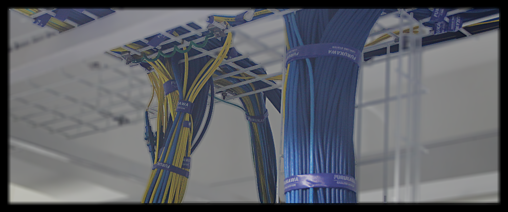

Network Configuration Documentation
Overview
This document outlines the BGP routing configuration for our multi-homed network with connections to various internet exchanges and transit providers in Bangkok, Hong Kong, Singapore, and Europe. Currently 3x 10G fibers are used for physical uplinks.
Bandwidth
Network Topology Diagram
graph TD
BKK50((BKK50 Gateway Router<br>CCR2004-16G-2S+<br>ECMP with 10G connections))
BKK50 --> |10G| BKK20
BKK50 --> |10G| BKK10
subgraph BKK20[BKK20 Edge Router<br>CCR2216-1G-12XS-2XQ]
B20_AMSIX[AMSIX-LAG<br>10G Physical Port]
end
subgraph BKK10[BKK10 Edge Router<br>CCR2116-12G-4S+]
B10_AMSIX[AMSIX-LAG<br>10G Physical Port]
B10_BKNIX[BKNIX-LAG<br>10G Physical Port]
end
B20_AMSIX --> |VLAN 911<br>1G| AMS_IX_BKK[AMS-IX Bangkok]
B20_AMSIX --> |VLAN 3994<br>200M| AMS_IX_HK[AMS-IX Hong Kong]
B20_AMSIX ==> |VLAN 2520<br>500M<br>Active| IPTX_SG[IPTX Singapore]
B20_AMSIX -.-> |VLAN 2517<br>500M<br>Passive| IPTX_HK[IPTX Hong Kong]
B10_AMSIX ==> |VLAN 2519<br>500M<br>Active| IPTX_HK
B10_AMSIX -.-> |VLAN 2518<br>500M<br>Passive| IPTX_SG
B10_AMSIX --> |VLAN 3995<br>100M| AMS_IX_EU[AMS-IX Europe]
B10_BKNIX --> |10G| BKNIX[BKNIX]
AMS_IX_BKK --> INTERNET((Internet))
AMS_IX_HK --> INTERNET
AMS_IX_EU --> INTERNET
IPTX_SG --> INTERNET
IPTX_HK --> INTERNET
BKNIX --> INTERNET
classDef router fill:#1a5f7a,color:#ffffff,stroke:#333,stroke-width:2px;
classDef ix fill:#4d3e3e,color:#ffffff,stroke:#333,stroke-width:2px;
classDef internet fill:#0077be,color:#ffffff,stroke:#333,stroke-width:2px;
classDef active stroke:#00ff00,stroke-width:4px;
classDef passive stroke:#ff0000,stroke-dasharray: 5 5;
class BKK50,INTERNET internet;
class BKK20,BKK10 router;
class AMS_IX_BKK,AMS_IX_HK,AMS_IX_EU,IPTX_SG,IPTX_HK,BKNIX ix;
linkStyle default stroke:#ffffff,stroke-width:2px;
Routing Configuration
| Name | Speed | Path Prepend | MED | Local Pref | External Communities | Description | Router |
|---|---|---|---|---|---|---|---|
| BKNIX | 10G | 0 | 10 | 200 | 142108:1:764 | Local IX | BKK10 |
| AMS-IX Bangkok | 1G | 0 | 20 | 190 | 142108:1:764 | Local IX | BKK20 |
| IPTX Singapore-BKK10 | 500M | 1 | 50 | 170 | 142108:2:35 | Regional Transit | BKK10 |
| IPTX Singapore-BKK20 | 500M | 1 | 50 | 160 | 142108:2:35 | Regional Transit | BKK20 |
| AMS-IX Hong Kong | 200M | 2 | 100 | 150 | 142108:2:142 | Regional IX | BKK20 |
| IPTX HK-BKK20 | 500M | 2 | 100 | 130 | 142108:2:142 | Regional Transit | BKK20 |
| IPTX HK-BKK10 | 500M | 2 | 100 | 120 | 142108:2:142 | Regional Transit | BKK10 |
| AMS-IX EU | 100M | 3 | 200 | 100 | 142108:2:142 | Remote IX | BKK10 |
This way:
- We keep our internal communities for our own routing decisions
- We share geographic information allowing peers to optimize their routing
- Peers can make informed decisions about traffic paths to our network
Would this be a useful approach?
Traffic Engineering Principles
- Local Preference: Higher values indicate more preferred routes. Local routes are preferred over regional, which are preferred over remote routes.
- MED (Multi-Exit Discriminator): Lower values are preferred. Used to influence inbound traffic when other attributes are equal.
- AS Path Prepending: Increases AS path length to make a route less preferred. Used for coarse control of inbound traffic.
HGC Circuit Configuration for ROTKO NETWORKS OÜ
The following circuits terminate at STT Bangkok 1 Data Center, MMR 3A facility in Bangkok, Thailand. All circuits are delivered to ROTKO NETWORKS OÜ infrastructure.
Primary Transit Circuits
Circuit PP9094729 (OTT00003347)
- Service: 400M (Burst to 800M) Thailand IPTx FOB Hong Kong
- Delivery: Customer Headend #2 (PEH8001159)
- VLAN: 2519
- Status: Hot upgrade + renewal
Circuit PP9094730 (OTT00003348)
- Service: 400M (Burst to 800M) Thailand IPTx FOB Singapore
- Delivery: Customer Headend #1 (PEH8001158)
- VLAN: 2520
- Status: Hot upgrade + renewal
Backup Circuits
Circuit PP9094735 (OTT00003349)
- Service: 800M Leased Line Internet Service FOB Thailand (Backup)
- Delivery: Customer Headend #1 (PEH8001158)
- VLAN: 2517
- Status: Hot upgrade + renewal
Circuit PP9094736 (OTT00003350)
- Service: 800M Leased Line Internet Service FOB Thailand (Backup)
- Delivery: Customer Headend #2 (PEH8001159)
- VLAN: 2518
- Status: Hot upgrade + renewal
Configuration Validation
BKK00: HK-HGC-IPTx-vlan2519 (Primary HK - PEH8001159)
BKK00: SG-HGC-IPTx-backup-vlan2518 (Backup SG - PEH8001159)
BKK20: SG-HGC-IPTx-vlan2520 (Primary SG - PEH8001158)
BKK20: HK-HGC-IPTx-backup-vlan2517 (Backup HK - PEH8001158)